2.2 Probability Theory
2.2.1 Axiom and Theorems of Probability
- Let S denote a sample space of an experiment P[S]=1
- \(P[A] \ge 0\) for every event A
- Let \(A_1,A_2,A_3,...\) be a finite or an infinite collection of mutually exclusive events. Then \(P[A_1\cup A_2 \cup A_3 ...]=P[A_1]+P[A_2]+P[A_3]+...\)
- \(P[\emptyset]=0\)
- \(P[A']=1-P[A]\)
- \(P[A_1 \cup A_2] = P[A_1] + P[A_2] - P[A_1 \cap A_2]\)
Conditional Probability \[ P[A|B]=\frac{A \cap B}{P[B]} \]
Independent Events Two events A and B are independent if and only if:
- \(P[A\cap B]=P[A]P[B]\)
- \(P[A|B]=P[A]\)
- \(P[B|A]=P[B]\)
A finite collection of events \(A_1, A_2, ..., A_n\) is independent if and only if any subcollection is independent.
Multiplication Rule \(P[A \cap B] = P[A|B]P[B] = P[B|A]P[A]\)
Bayes’ Theorem
Let \(A_1, A_2, ..., A_n\) be a collection of mutually exclusive events whose union is S.
Let b be an event such that \(P[B]\neq0\)
Then for any of the events \(A_j\), j = 1,2,…,n
\[
P[A_|B]=\frac{P[B|A_j]P[A_j]}{\sum_{i=1}^{n}P[B|A_j]P[A_i]}
\]
Jensen’s Inequality
- If g(x) is convex \(E(g(X)) \ge g(E(X))\)
- If g(x) is concave \(E(g(X)) \le g(E(X))\)
2.2.1.1 Law of Iterated Expectations
\(E(Y)=E(E(Y|X))\)
2.2.1.2 Correlation and Independence
Independence
- \(f(x,y)=f_X(x)f_Y(y)\)
- \(f_{Y|X}(y|x)=f_Y(y)\) and \(f_{X|Y}(x|y)=f_X(x)\)
- \(E(g_1(X)g_2(Y))=E(g_1(X))E(g_2(Y))\)
Mean Independence (implied by independence)
- Y is mean independent of X if and only if \(E(Y|X)=E(Y)\)
- \(E(Xg(Y))=E(X)E(g(Y))\)
Uncorrelated (implied by independence and mean independence)
- \(Cov(X,Y)=0\)
- \(Var(X+Y)=Var(X) + Var(Y)\)
- \(E(XY)=E(X)E(Y)\)
\[ Strongest \\ \downarrow \\ Independence \\ \downarrow \\ Mean Independence \\ \downarrow \\ Uncorrelated \\ \downarrow \\ Weakest\\ \]
2.2.2 Central Limit Theorem
Let \(X_1, X_2,...,X_n\) be a random sample of size n from a distribution (not necessarily normal) X with mean \(\mu\) and variance \(\sigma^2\). then for large n (\(n \ge 25\)),
- \(\bar{X}\) is approximately normal with with mean \(\mu_{\bar{X}}=\mu\) and variance \(\sigma^2_{\bar{X}} = Var(\bar{X})= \frac{\sigma^2}{n}\)
- \(\hat{p}\)is approximately normal with \(\mu_{\hat{p}} = p, \sigma^2_{\hat{p}} = \frac{p(1-p)}{n}\)
- \(\hat{p_1} - \hat{p_2}\) is approximately normal with \(\mu_{\hat{p_1} - \hat{p_2}} = p_1 - p_2, \sigma^2_{\hat{p_1} - \hat{p_2}}=\frac{p_1(1-p)}{n_1} + \frac{p_2(1-p)}{n_2}\)
- \(\bar{X_1} - \bar{X_2}\) is approximately normal with \(\mu_{\bar{X_1} - \bar{X_2}} = \mu_1 - \mu_2, \sigma^2_{\bar{X_1} - \bar{X_2}} = \frac{\sigma^2_1}{n_1}+\frac{\sigma^2_2}{n_2}\)
- The following random variables are approximately standard normal:
+ \(\frac{\bar{X}-\mu}{\sigma/\sqrt{n}}\)
+ \(\frac{\hat{p}-p}{\sqrt{\frac{p(1-p)}{n}}}\)
+ \(\frac{(\hat{p_1}-\hat{p_2})-(p_1-p_2)}{\sqrt{\frac{p_1(1-p_1)}{n_1}-\frac{p_2(1-p_2)}{n_2}}}\)
+ \(\frac{(\bar{X_1}-\bar{X_2})-(\mu_1-\mu_2)}{\sqrt{\frac{\sigma^2_1}{n_1}-\frac{\sigma^2_2}{n_2}}}\)
If \(\{x_i\}_{i=1}^{n}\) is an iid random sample from a probability distribution with finite mean \(\mu\) and finite variance \(\sigma^2\) then the sample mean \(\bar{x}=n^{-1}\sum_{i=1}^{n}x_i\) scaled by \(\sqrt{n}\) has the following limiting distribution
\[ \sqrt{n}(\bar{x}-\mu) \to^d N(0,\sigma^2) \] or if we were to standardize the sample mean,
\[ \frac{\sqrt{n}(\bar{x}-\mu)}{\sigma} \to^d N(0,1) \]
- holds for most random sample from any distribution (continuous, discrete, unknown).
- extends to multivariate case: random sample of a random vector converges to a multivariate normal.
- Variance from the limiting distribution is the asymptotic variance (Avar)
\[ Avar(\sqrt{n}(\bar{x}-\mu)) = \sigma^2 \\ \lim_{n \to \infty} Var(\sqrt{n}(\bar{x}-\mu)) = \sigma^2 \\ Avar(.) \neq lim_{n \to \infty} Var(.) \]
2.2.3 Random variable
| Discrete Variable | Continuous Variable | |
|---|---|---|
| Definition | A random variable is discrete if it can assume at most a finite or countably infinite number of possible values | A random variable is continuous if it can assume any value in some interval or intervals of real numbers and the probability that it assumes any specific value is 0 |
| Density Function | A function f is called a density for X if: (1) \(f(x) \ge 0\) (2) \(\sum_{all~x}f(x)=1\) (3) \(f(x)=P(X=x)\) for x real |
A function f is called a density for X if: (1) \(f(x) \ge 0\) for x real (2) \(\int_{-\infty}^{\infty} f(x) \; dx=1\) (3) \(P[a \le X \le] =\int_{a}^{b} f(x) \; dx\) for a and b real |
| Cumulative Distribution Function for x real |
\(F(x)=P[X \le x]\) | \(F(x)=P[X \le x]=\int_{-\infty}^{\infty}f(t)dt\) |
| \(E[H(X)]\) | \(\sum_{all ~x}H(x)f(x)\) | \(\int_{-\infty}^{\infty}H(x)f(x)\) |
| \(\mu=E[X]\) | \(\sum_{all ~ x}xf(x)\) | \(\int_{-\infty}^{\infty}xf(x)\) |
| Ordinary Moments the kth ordinary moment for variable X is defined as: \(E[X^k]\) |
\(\sum_{all ~ x \in X}(x^kf(x))\) | \(\int_{-\infty}^{\infty}(x^kf(x))\) |
| Moment generating function (mgf) \(m_X(t)=E[e^{tX}]\) |
\(\sum_{all ~ x \in X}(e^{tx}f(x))\) | \(\int_{-\infty}^{\infty}(e^{tx}f(x)dx)\) |
Expected Value Properties:
- E[c] = c for any constant c
- E[cX] = cE[X] for any constant c
- E[X+Y] = E[X] = E[Y]
- E[XY] = E[X].E[Y] (if X and Y are independent)
Expected Variance Properties:
- \(Var(c) = 0\) for any constant c
- \(Var(cX) = c^2Var(X)\) for any constant c
- \(Var(X) \ge 0\)
- \(Var(X) = E(X^2) - (E(X))^2\)
- \(Var(X+c)=Var(X)\)
- \(Var (X+Y) = Var(X) + Var(Y)\) (if X and Y are independent)
Standard deviation \(\sigma=\sqrt(\sigma^2)=\sqrt(Var X)\)
Moment generating function properties:
- \(\frac{d^k(m_X(t))}{dt^k}|_{t=0}=E[X^k]\)
- \(\mu=E[X]=m_X'(0)\)
- \(E[X^2]=m_X''(0)\)
mgf Theorems
Let \(X_1,X_2,...X_n,Y\) be random variables with moment-generating functions \(m_{X_1}(t),m_{X_2}(t),...,m_{X_n}(t),m_{Y}(t)\)
- If \(m_{X_1}(t)=m_{X_2}(t)\) for all t in some open interval about 0, then \(X_1\) and \(X_2\) have the same distribution
- If \(Y = \alpha + \beta X_1\), then \(m_{Y}(t)= e^{\alpha t}m_{X_1}(\beta t)\)
- If \(X_1,X_2,...X_n\) are independent and \(Y = \alpha_0 + \alpha_1 X_1 + \alpha_2 X_2 + ... + \alpha_n X_n\) (where \(\alpha_0, ... ,\alpha_n\) are real numbers), then \(m_{Y}(t)=e^{\alpha_0 t}m_{X_1}(\alpha_1t)m_{X_2}(\alpha_2 t)...m_{X_n}(\alpha_nt)\)
- Suppose \(X_1,X_2,...X_n\) are independent normal random variables with means \(\mu_1,\mu_2,...\mu_n\) and variances \(\sigma^2_1,\sigma^2_2,...,\sigma^2_n\). If \(Y = \alpha_0 + \alpha_1 X_1 + \alpha_2 X_2 + ... + \alpha_n X_n\) (where \(\alpha_0, ... ,\alpha_n\) are real numbers), then Y is normally distributed with mean \(\mu_Y = \alpha_0 + \alpha_1 \mu_1 +\alpha_2 \mu_2 + ... + \alpha_n \mu_n\) and variance \(\sigma^2_Y = \alpha_1^2 \sigma_1^2 + \alpha_2^2 \sigma_2^2 + ... + \alpha_n^2 \sigma_n^2\)
2.2.4 Moment
| Moment | Uncentered | Centered |
|---|---|---|
| 1st | \(E(X)=\mu=Mean(X)\) | |
| 2nd | \(E(X^2)\) | \(E((X-\mu)^2)=Var(X)=\sigma^2\) |
| 3rd | \(E(X^3)\) | \(E((X-\mu)^3)\) |
| 4th | \(E(X^4)\) | \(E((X-\mu)^4)\) |
Skewness(X) = \(E((X-\mu)^3)/\sigma^3\)
Kurtosis(X) = \(E((X-\mu)^4)/\sigma^4\)
Conditional Moments \[ E(Y|X=x)= \begin{cases} \sum_yyf_Y(y|x) & \text{for discrete RV}\\ \int_yyf_Y(y|x)dy & \text{for continous RV}\\ \end{cases} \]
\[ Var(Y|X=x)= \begin{cases} \sum_y(y-E(Y|x))^2f_Y(y|x) & \text{for discrete RV}\\ \int_y(y-E(Y|x))^2f_Y(y|x)dy & \text{for continous RV}\\ \end{cases} \]
2.2.4.1 Multivariate Moments
\[ \begin{equation} E= \left( \begin{array}{c} X \\ Y \\ \end{array} \right) = \left( \begin{array}{c} E(X) \\ E(Y) \\ \end{array} \right) = \left( \begin{array}{c} \mu_X \\ \mu_Y \\ \end{array} \right) \end{equation} \]
\[
\begin{equation}
\begin{split}
Var
\left(
\begin{array}{c}
X \\
Y \\
\end{array}
\right)
&=
\left(
\begin{array}{c}
Var(X) & Cov(X,Y) \\
Cov(X,Y) & Var(Y) \\
\end{array}
\right) \\
&=
\left(
\begin{array}{c}
E((X-\mu_X)^2) & E((X-\mu_X)(Y-\mu_Y)) \\
E((X-\mu_X)(Y-\mu_Y)) & E((Y-\mu_Y)^2) \\
\end{array}
\right)
\end{split}
\end{equation}
\]
Properties
- \(E(aX + bY + c)=aE(X) +bE(Y) + c\)
- \(Var(aX + bY + c) = a^2Var(X) + b^2Var(Y) + 2abCov(X,Y)\)
- \(Cov(aX + bY, cX + bY) =acVar(X)+bdVar(Y) + (ad+bc)Cov(X,Y)\)
- Correlation: \(\rho_{XY} = \frac{Cov(X,Y)}{\sigma_X\sigma_Y}\)
2.2.5 Distributions
Conditional Distributions \[ f_{X|Y}(X|Y=y)=\frac{f(X,Y)}{f_Y(y)} \] \(f_{X|Y}(X|Y=y)=f_X(X)\) if X and Y are independent
2.2.5.1 Discrete
CDF: Cumulative Density Function
MGF: Moment Generating Function
2.2.5.1.2 Binomial
\(B(n,p)\)
- the experiment consists of a fixed number (n) of Bernoulli trials, each of which results in a success (s) or failure (f).
- The trials are identical and independent, and probability of success (p) and probability of failure (q = 1- p) remains the same for all trials.
- The random variable X denotes the number of successes obtained in the n trials.
Density
\[ f(x)={{n}\choose{x}}p^xq^{n-x} \]
CDF
You have to use table
# Histogram of 100000 random values from a sample of 100 with probability of 0.5
hist(rbinom(100000, size = 100, prob = 0.5))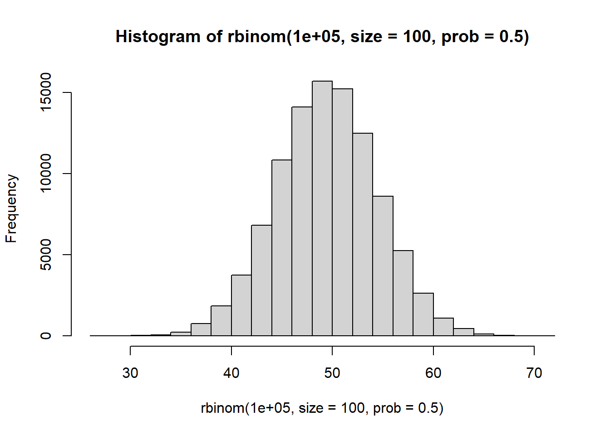
MGF \[ m_X(t) =(q+pe^t)^n \] Mean \[ \mu = E(x) = np \]
Variance \[ \sigma^2 =Var(X) = npq \]
2.2.5.1.3 Poisson
\(Pois(\lambda)\)
- Arises with Poisson process, which involves observing discrete events in a continuous “interval” of time, length, or space.
- The random variable X is the number of occurrences of the event within an interval of s units
- The parameter \(\lambda\) is the average number of occurrences of the event in question per measurement unit. For the distribution, we use the parameter \(k=\lambda s\)
Density \[ f(x) = \frac{e^{-k}k^x}{x!} \] ,k > 0, x =0,1,…
CDF
Use table
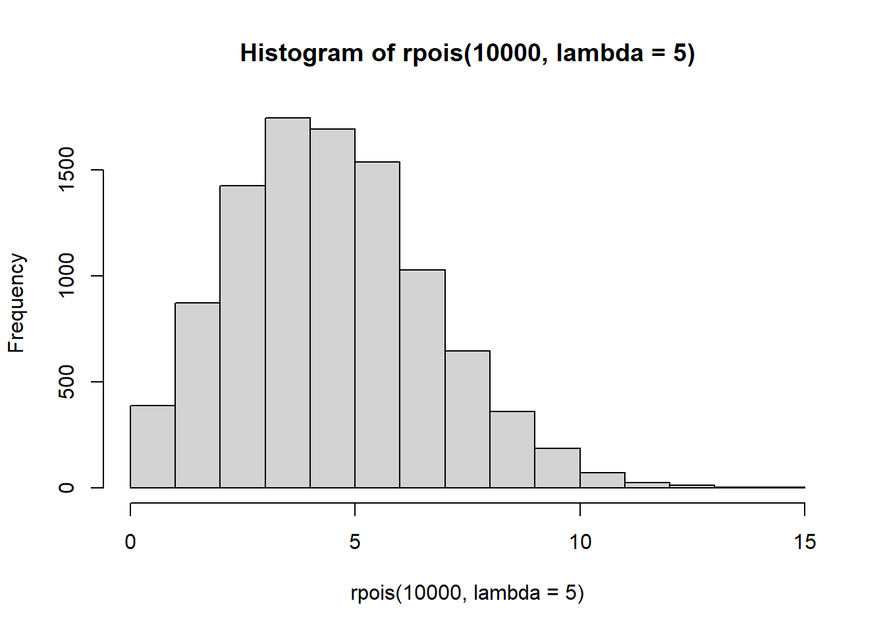
MGF \[ m_X(t)=e^{k(e^t-1)} \]
Mean \[ \mu = E(X) = k \]
Variance \[ \sigma^2 = Var(X) = k \]
2.2.5.1.4 Geometric
- The experiment consists of a series of trails. The outcome of each trial can be classed as being either a “success” (s) or “failure” (f). (This is called a Bernoulli trial).
- The trials are identical and independent in the sense that the outcome of one trial has no effect on the outcome of any other. The probability of success (p) and probability of failure (q=1-p) remains the same from trial to trial.
- lack of memory
- X: the number of trials needed to obtain the first success.
Density
\[ f(x)=pq^{x-1} \]
CDF
\[
F(x) = 1- q^x
\]
# hist of Geometric distribution with probability of success = 0.5
hist(rgeom(n = 10000, prob = 0.5))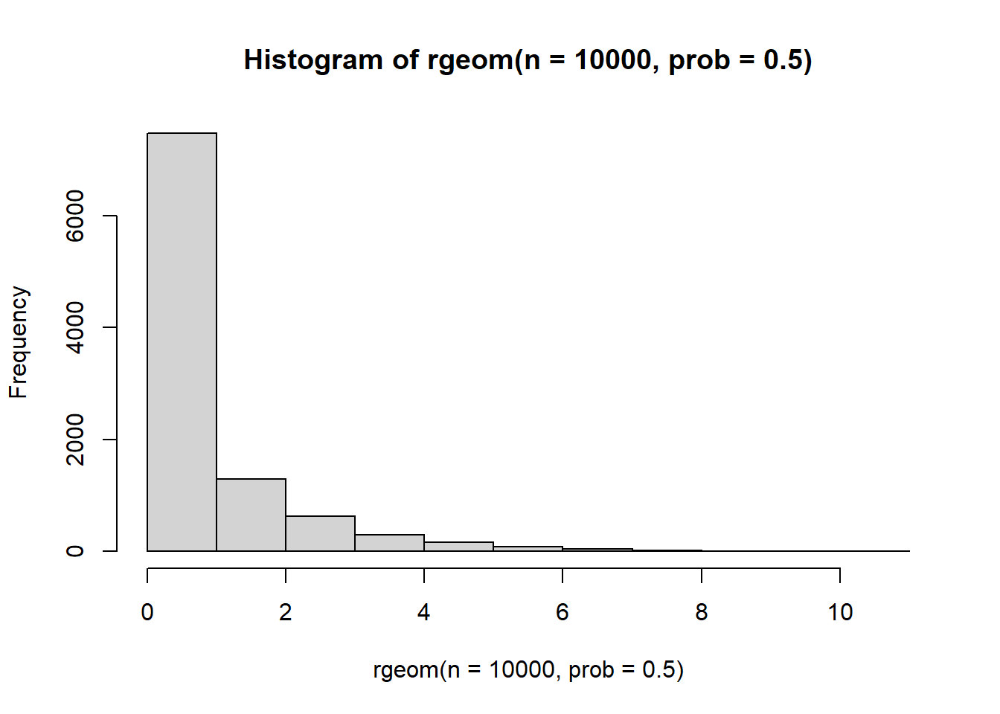
MGF \[ m_X(t) = \frac{pe^t}{1-qe^t} \] for \(t < -ln(q)\)
Mean \[ \mu = \frac{1}{p} \]
Variance \[ \sigma^2 = Var(X) = \frac{q}{p^2} \]
2.2.5.1.5 Hypergeometric
- The experiment consists of drawing a random sample of size n without replacement and without regard to order from a collection of N objects.
- Of the N objects, r have a trait of interest; N-r do not have the trait
- X is the number of objects in the sample with the trait.
Density \[ f(x)=\frac{{{r}\choose{x}}{{N-r}\choose{n-x}}}{{{N}\choose{n}}} \] where \(max[0,n-(N-r)] \le x \le min(n,r)\)
# hist of hypergeometric distribution with the number of white balls = 50, and the number of black balls = 20, and number of balls drawn = 30.
hist(rhyper(nn = 10000 , m=50, n=20, k=30))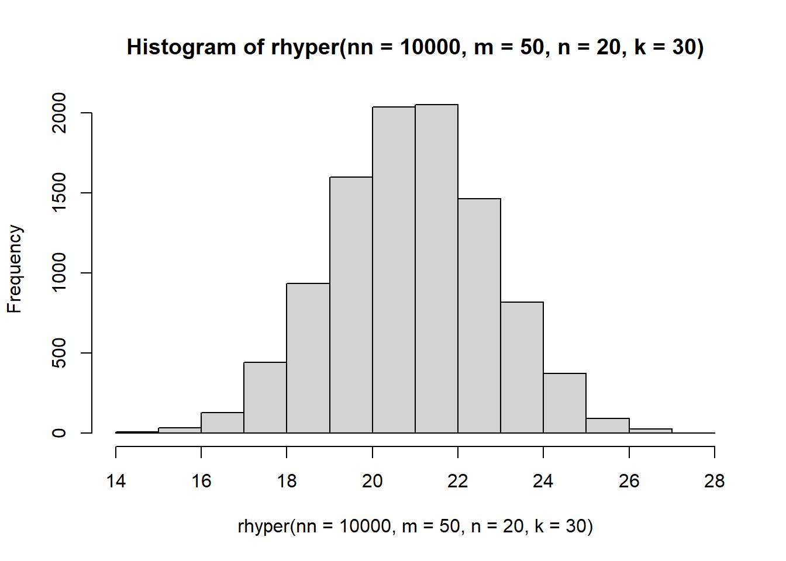
Mean \[ \mu = E(x)= \frac{nr}{N} \]
Variance \[ \sigma^2 = var(X) = n (\frac{r}{N})(\frac{N-r}{N})(\frac{N-n}{N-1}) \]
Note For large N (if \(\frac{n}{N} \le 0.05\)), this distribution can be approximated using a Binomial distribution with \(p = \frac{r}{N}\)
2.2.5.1.6
2.2.5.1.7
2.2.5.1.8
2.2.5.1.9
2.2.5.1.10
2.2.5.1.11
2.2.5.1.12
2.2.5.2 Continuous
2.2.5.2.1 Uniform
- Defined over an interval (a,b) in which the probabilities are “equally likely” for subintervals of equal length.
Density \[ f(x)=\frac{1}{b-a} \] for a < x < b
CDF
\[\begin{cases} 0 & \text{if x <a } \\ \frac{x-a}{b-a} & \text{if $a \le x \le b$ }\\ 1 & \text{if x >b}\\ \end{cases}\]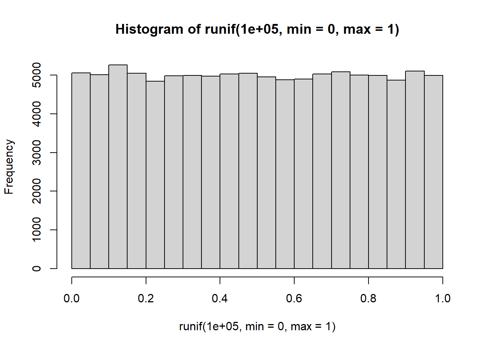
MGF
\[\begin{cases} \frac{e^{tb} - e^{ta}}{t(b-a)}&\text{ if $t \neq 0$}\\ 1&\text{if $ t \neq 0$}\\ \end{cases}\]Mean
\[ \mu = E(X) = \frac{a +b}{2} \]
Variance \[ \sigma^2 = Var(X) = \frac{(b-a)^2}{12} \]
2.2.5.2.2 Gamma
- is used to define the exponential and chi-squared distributions
- The gamma function is defined as:
\[ \Gamma(\alpha) = \int_0^{\infty} z^{\alpha-1}e^{-z}dz \] where \(\alpha > 0\)
- Properties of The Gamma function:
+ \(\Gamma(1) = 1\) + For \(\alpha >1\), \(\Gamma(\alpha)=(\alpha-1)\Gamma(\alpha-1)\) + If n is an integer and \(n>1\), then \(\Gamma(n) = (n-1)!\)
Density \[ f(x) = \frac{1}{\Gamma(\alpha)\beta^{\alpha}}x^{\alpha-1}e^{-x/\beta} \]
CDF \[ F(x,n,\beta) = 1 -\sum_{k=0}^{n-1} \frac{(\frac{x}{\beta})^k e^{-x/\beta}}{k!} \] for x>0, and \(\alpha = n\) (a positive integer)
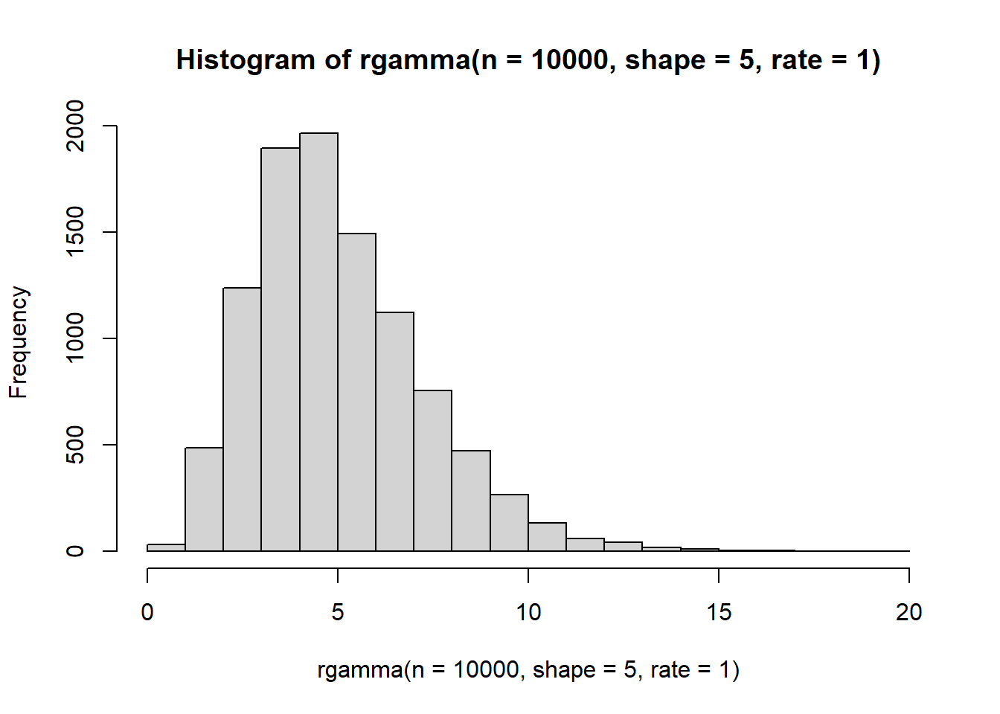
MGF \[ m_X(t) = (1-\beta t)^{-\alpha} \] where \(t < \frac{1}{\beta}\)
Mean \[ \mu = E(X) = \alpha \beta \]
Variance \[ \sigma^2 = Var(X) = \alpha \beta^2 \]
2.2.5.2.3 Normal
\(N(\mu,\sigma^2)\)
- is symmetric, bell-shaped curve with parameters \(\mu\) and \(\sigma^2\)
- also known as Gaussian.
Density \[ f(x) = \frac{1}{\sqrt{2\pi \sigma}}e^{-\frac{1}{2}(\frac{x-\mu}{\sigma})^2} \] for \(-\infty < x, \mu< \infty, \sigma > 0\)
CDF
Use table
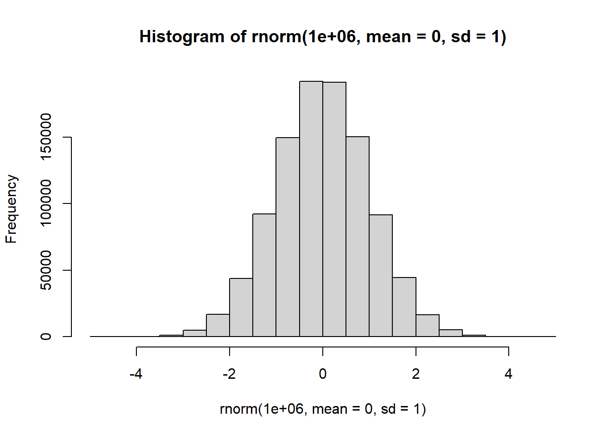
MGF \[ m_X(t) = e^{\mu t + \frac{\sigma^2 t^2}{2}} \]
Mean \[ \mu = E(X) \]
Variance \[ \sigma^2 = Var(X) \]
Standard Normal Random Variable
- The normal random variable Z with mean \(\mu = 0\) and standard deviation \(\sigma =1\) is called standard normal
- Any normal random variable X with mean \(\mu\) and standard deviation \(\sigma\) can be converted to the standard normal random variable \(Z = \frac{X-\mu}{\sigma}\)
Normal Approximation to the Binomial Distribution
Let X be binomial with parameters n and p. For large n (so that \((A)p \le .5\) and \(np > 5\) or (B) \(p>.5\) and \(nq>5\)), X is approximately normally distributed with mean \(\mu = np\) and standard deviation \(\sigma = \sqrt{npq}\)
When using the normal approximation, add or subtract 0.5 as needed for the continuity correction
| Discrete | Approximate Normal (corrected) |
|---|---|
| P(X = c) | P(c -0.5 < Y < c + 0.5) |
| P(X < c) | P(Y < c - 0.5) |
| P(X c) | P(Y < c + 0.5) |
| P(X > c) | P(Y > c + 0.5) |
| P(X c) | P(Y > c - 0.5) |
Normal Probability Rule
If X is normally distributed with parameters \(\mu\) and \(\sigma\), then
* \(P(-\sigma < X - \mu < \sigma) \approx .68\)
* \(P(-2\sigma < X - \mu < 2\sigma) \approx .95\)
* \(P(-3\sigma < X - \mu < 3\sigma) \approx .997\)
2.2.5.2.5 Lognomral
\(lognormal(\mu,\sigma^2)\)
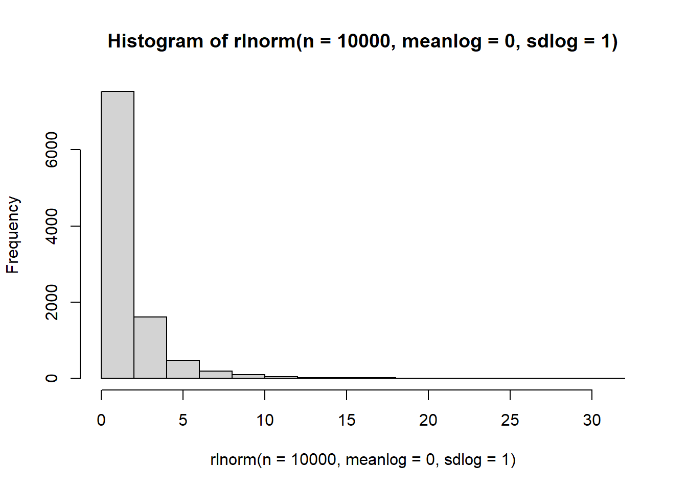
2.2.5.2.6 Exponential
\(Exp(\lambda)\)
- A special case of the gamma distribution with \(\alpha = 1\)
- Lack of memory
- \(\lambda\) = rate Within a Poisson process with parameter \(\lambda\), if W is the waiting tine until the occurrence of the first event, then W has an exponential distribution with \(\beta = 1/\alpha\)
Density \[ f(x) = \frac{1}{\beta} e^{-x/\beta} \] for \(x,\beta > 0\)
CDF
\[\begin{equation} F(x) = \begin{cases} 0 & \text{ if $x \le 0$}\\ 1 - e^{-x/\beta} & \text{if $x > 0$}\\ \end{cases} \end{equation}\]
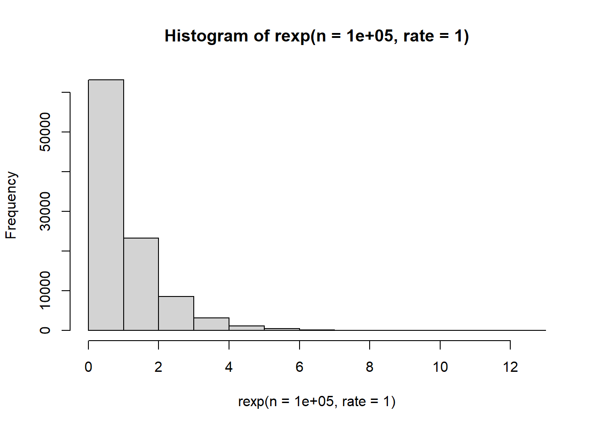
MGF \[ m_X(t) = (1-\beta t)^{-1} \] for \(t < 1/\beta\)
Mean \[ \mu = E(X) = \beta \]
Variance \[ \sigma^2 = Var(X) =\beta^2 \]
2.2.5.2.7 Chi-squared
\(\chi^2=\chi^2(k)\)
- A special case of the gamma distribution with \(\beta =2\), and \(\alpha = \gamma /2\) for a positive integer \(\gamma\)
- The random variable X is denoted \(\chi_{\gamma}^2\) and is said to have a chi-squared distribution with \(\gamma\) degrees of freedom.
Density Use density for Gamma Distribution with \(\beta = 2\) and \(\alpha = \gamma/2\)
CDF Use table
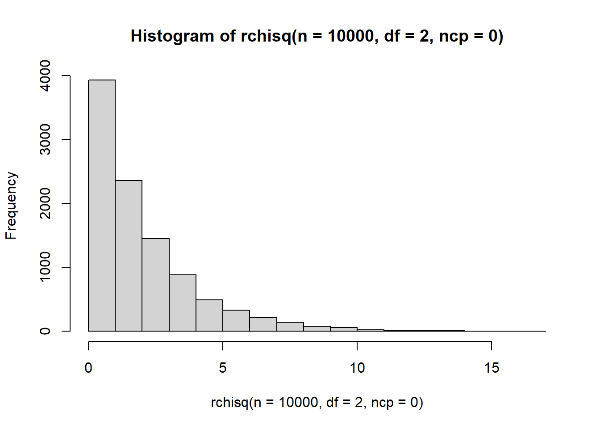
MGF \[ m_X(t) = (1-2t)^{-\gamma/2} \]
Mean \[ \mu = E(X) = \gamma \]
Variance \[ \sigma^2 = Var(X) = 2\gamma \]
2.2.5.2.8 Student T
\(T(v)\)
- \(T=\frac{Z}{\sqrt{\chi_{\gamma}^2/\gamma}}\), where Z is standard normal follows a student-t distribution with \(\gamma\) dof
- The distribution is symmetric, bell-shaped , with a mean of \(\mu=0\)
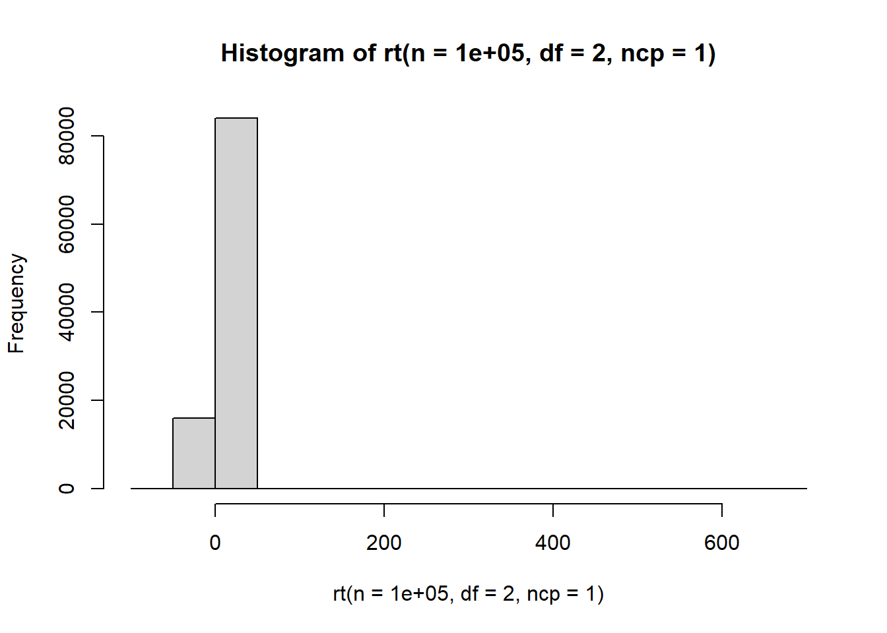
2.2.5.2.9 F-Distribution
\(F(d_1,d_2)\)
- F distribution is strictly positive
- \(F=\frac{\chi_{\gamma_1}^2/\gamma_1}{\chi_{\gamma_2^2}/\gamma_2}\) follows an F distribution with dof \(\gamma_1\) and \(\gamma_2\), where \(\chi_{\gamma_1}^2\) and \(\chi_{\gamma_2}^2\) are independent chi-squared random variables.
- The distribution is asymmetric and never negative.
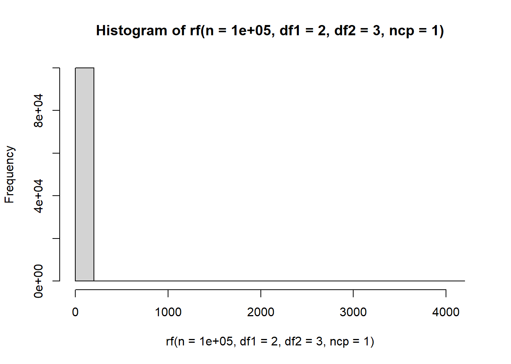
2.2.5.2.10 Cauchy
Central Limit Theorem and Weak Law do not apply to Cauchy because it does not have finite mean and finite variance
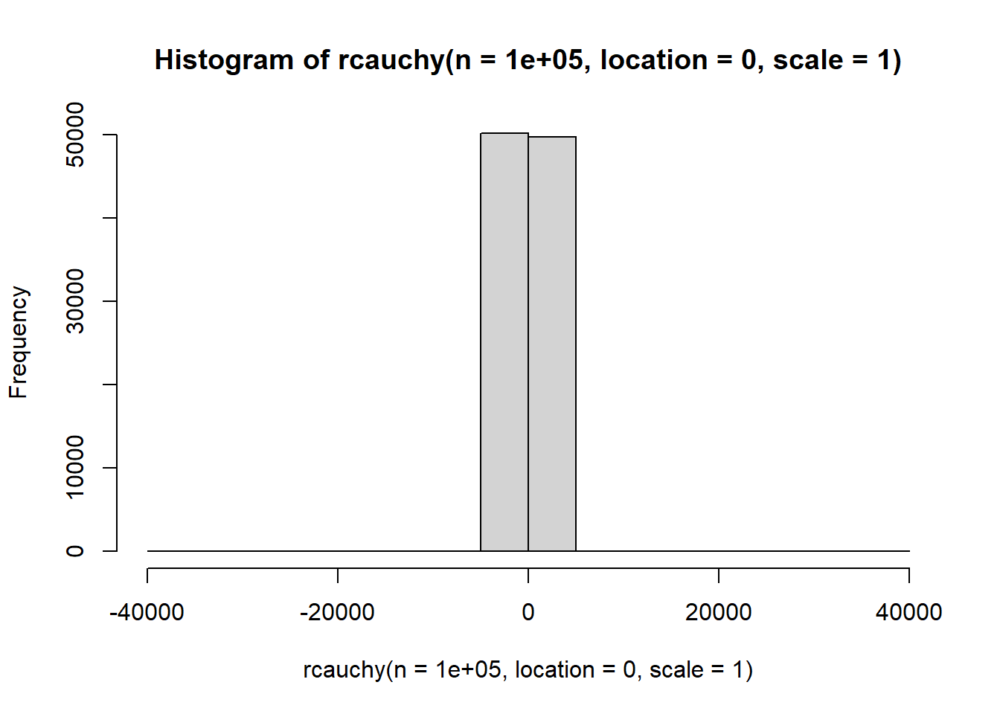